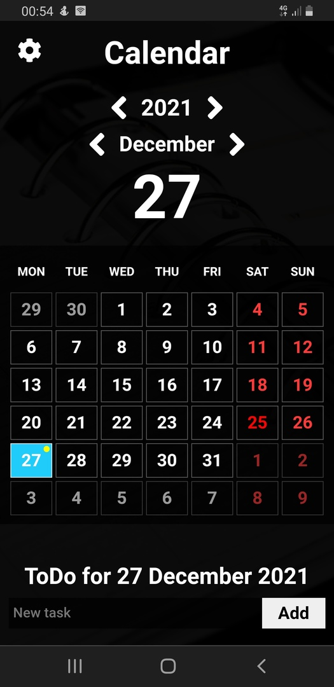

About project
I created this application during EPAM trainings.
I used HTML, CSS (SCSS), BEM, JavaScript (TypeScript), cross-browser and adaptive, WebPack. I made the design
For storing tasks, I used LocalStorage
Link to view the site: calendar-todo-weather
Link to repository in GitHub: project "calendar-todo-weather"
 Home page. Calendar: the ability to switch by months and years, display
and highlight in the calendar of today and holidays. Weather until the end of the week (using a API
the city Mogilev).
Home page. Calendar: the ability to switch by months and years, display
and highlight in the calendar of today and holidays. Weather until the end of the week (using a API
the city Mogilev).
ToDo list: add, select done, edit and delete task; in calendar: a mark
in the calendar with tasks, highlighting the selected day for recording and viewing tasks.
Settings: show / hide days of other months, show / hide to-do list,
selection of the first day of the week (monday or sunday), select weekend days of the week.

Adaptive (mobile)